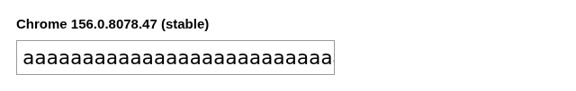
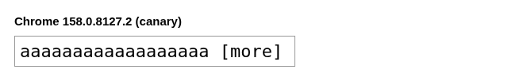
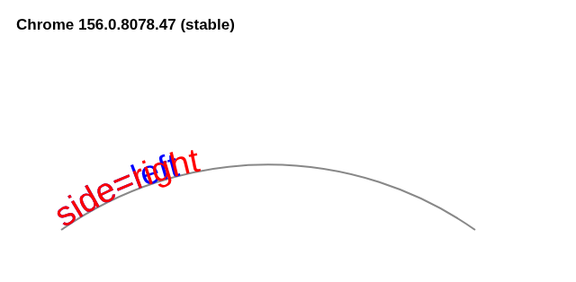
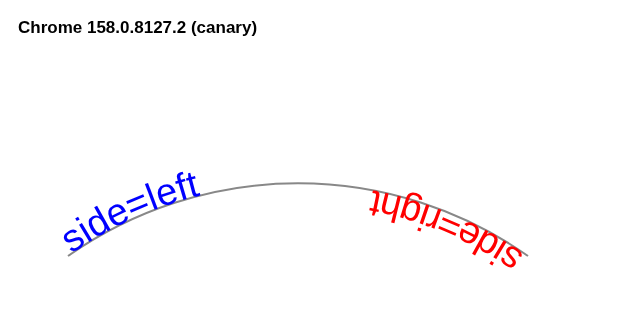

Scheduled for Chrome 157, missing from the tested 157 beta: measuring five new web platform features across five real Chrome builds
Feature dashboards tell you what is scheduled to ship. They do not tell you what the build on your machine actually does. I picked five features that the Chrome Status roadmap schedules for milestones 157 and 158 - its roadmap pages group them under a section literally titled "Enabled by default", while each feature's own detail page still reads Proposed or In development, unreleased. I wrote one probe per feature and ran the same harness against five real browser builds: stable 156, beta 157, dev 158 and canary 158, plus Playwright's bundled chromium as a control. Four features were indeed present in the prerelease builds of their scheduled milestone - and presence in a beta is not shipped stable support. One was not, and the gap is the most useful finding of the exercise.
Everything below is measured, not remembered. The harness, raw results and screenshots are in the companion repository (github.com/ido-lempert/Mdlinks/tree/main/chrome-channel-delta-lab); nothing here is paraphrased from release notes.
The setup, exactly
- Builds (version strings read from
browser.version()at runtime, never assumed): Chrome stable 156.0.8078.47 (system binary), Playwright chromium 156.0.8078.4, and Chrome for Testing linux64 zips for beta 157.0.8103.15, dev 158.0.8117.2 and canary 158.0.8127.2 from the official CfT feed, launched viaexecutablePath. - Playwright 1.64.1 on Node v22.23.4, Linux x86_64, headless, no extra custom launch flags. Branded beta/dev installs through
npx playwright installwanted sudo; the hermetic CfT zips need none. - Chrome Status entries used (scheduled milestone in parentheses): text-overflow
<string>(feature/6294595288825856, M157), HTML-in-canvas (feature/5172548013916160, M157), LoAF style and layout duration (feature/5171478175809536, M157),::highlight(*)(feature/5174965228929024, M158), SVG textPathside(feature/5422782593761280, M158).
One caveat up front: this is a point-in-time snapshot (October 28, 2026). Beta and dev builds move weekly, so rerun the harness before quoting numbers.
1. text-overflow finally takes a custom string (M157)
CSS Overflow 4 lets you replace the ellipsis with any string: text-overflow: " [more]". The quotes are required, and note the string starts with a space - that space is what separates the marker from the clipped text. The probe sets it on a clipped line and reads the computed style:
CSS.supports('text-overflow', '" [more]"')
getComputedStyle(el).textOverflow
On 156 the declaration is dropped and the computed value falls back to clip. On 157 and both 158 builds the computed value is " [more]" and the custom string renders in place of the clipped text (screenshots in the repo: hard clip on 156, " [more]" on canary). One limit worth knowing before you restyle every table cell: the two-value form from the spec, text-overflow: "L" "R" for start and end edges, is rejected by CSS.supports in every build I tested, including canary. Single string only, for now.


2. HTML-in-canvas is real, and the runtime teaches you the contract (M157)
CanvasRenderingContext2D grows one method between 156 and 157: drawElementImage, found by diffing the prototype's property names across builds rather than trusting a blog post. Calling it naively throws, and the exception messages walk you to the working setup. Verified verbatim on the 157 beta:
Failed to execute 'drawElementImage' on 'CanvasRenderingContext2D': DrawElementImage requires the canvas to have the content=drawable attribute. Failed to execute 'drawElementImage' on 'CanvasRenderingContext2D': Descendants passed to DrawElementImage must have the 'drawable' attribute.
The minimal verified example, pixel-checked on both 157 and 158:
<canvas id="c" width="120" height="60" content="drawable">
<div id="src" drawable style="background:#f00;width:60px;height:30px">hi</div>
</canvas>
<script type="module">
const ctx = document.getElementById('c').getContext('2d');
await ctx.drawElementImage(document.getElementById('src'), 5, 5);
// getImageData(10,10) now reads [255, 0, 0, 255]
</script>
Drawing actual DOM into a canvas, with layout handled by the browser, opens the door to canvas-based editors and export flows that today need foreignObject hacks. This probe only proves the render path works. Layout synchronization, events and canvas tainting are deeper tests I have not run yet.
3. The discrepancy: Long Animation Frames style/layout fields (scheduled for M157, absent from the tested 157 beta)
The Long Animation Frames API is how you attribute jank to specific scripts. A dashboard entry scheduled for milestone 157 adds styleDuration and layoutDuration to frame entries and forcedStyleDuration to script entries, so you can tell expensive style recalculation apart from long JavaScript.
Prototype sniffing is not evidence, so the probe registers a real PerformanceObserver for long-animation-frame and then forces style and layout work: 500 elements, transform writes alternating with synchronous getBoundingClientRect(), 250ms per frame, twice. On stable 156 and beta 157.0.8103.15 the observer fires real entries, but their toJSON() keys stop at blockingDuration and scripts. No styleDuration, no layoutDuration, and no forcedStyleDuration on the script entries - only the older forcedStyleAndLayoutDuration, around 160ms there. On dev and canary 158 the same workload produces entries that carry the new fields.
A detail that made me trust the new fields: on 158, the entry-level styleDuration reads 0 for this workload, while the script's forcedStyleDuration reads roughly 150-170ms. That range is honest about noise: rerunning the identical harness moves the number within it, so treat it as a single-machine figure, not a constant. Forced synchronous work is attributed to the script that caused it, not to the render step. The split fields are not decorative; they change where the blame lands.
Why is a feature the roadmap groups under "Enabled by default" for 157 missing from the tested 157 beta? I do not know, and I will not guess in print. The detail page still reads status Proposed, unreleased, desktop milestone 157, rollout plan "will ship" - future tense, and it was last updated October 16 with no Finch rollout link. The roadmap describes a future shipping plan, while the detail page still marks the feature Proposed and unreleased; neither statement establishes that this beta should already contain the fields, and a later 157 build may still add them. What is verified: as of October 28, the tested beta 157.0.8103.15 fires real LoAF entries, but none of them carry the new fields; the entries from the current dev and canary 158 builds do. If you are building on them, detect the field on real entries, not the milestone on a dashboard.
4. ::highlight(*) styles every custom highlight at once (M158)
Custom highlights (the Highlight/CSS.highlights API) previously had to be styled one name at a time. The universal selector ::highlight(*) matches all of them, with zero specificity, as a base layer that named rules override. The cascade claim is measurable, so I measured it with pseudo-aware getComputedStyle:
// register two highlights first, or there is nothing to style
const base = new Highlight(rangeOne), named = new Highlight(rangeTwo);
CSS.highlights.set('base', base);
CSS.highlights.set('named', named);
sheet.replaceSync(`
::highlight(*) { background-color: rgb(255, 255, 0); }
::highlight(named) { background-color: rgb(0, 0, 255); }
`);
getComputedStyle(elOne, '::highlight(base)').backgroundColor // yellow on 158
getComputedStyle(elTwo, '::highlight(named)').backgroundColor // blue on 158
On 156 and 157 the ::highlight(*) rule is silently dropped at parse time (the sheet keeps 1 rule instead of 2) and the base style never applies; the named rule still works. On 158 the base is yellow and the named override is blue in both source orders - the named rule wins on specificity, not on rule order, exactly as specified. Silent rule dropping is worth remembering: your stylesheet will not tell you it lost the rule.
5. SVG textPath side="right" runs text along the other side of the path (M158)
The side attribute lets text follow the other side of a path without rewriting the path data. The probe draws the same text on the same arc with side="left" and side="right" and reads glyph metrics. On 156 and 157 the attribute is ignored: both texts render identically, overlapping at the left end of the arc (the screenshot looks like a printing accident). On 158 the right-side text runs in the opposite direction, from the other end of the arc. The measured numbers: getRotationOfChar(0) reads -87.05 degrees for the left-side text and 267.05 for the right-side text, while getComputedTextLength() stays identical at 96.16 - same text, same length, opposite side. One provenance note: the screenshots use different literal strings for left and right so you can tell them apart at a glance, so treat them as illustrative; the quantitative probe drew identical strings on both sides.


What I would take from this
Four of the five features were present in the prerelease builds of their scheduled milestone (beta 157, dev and canary 158 - again, not a stable-shipping claim). The fifth was not: the roadmap groups it under "Enabled by default" for 157 while the tested 157 beta fires LoAF entries that carry none of the new fields; the feature's own detail page still reads Proposed and unreleased. Five hand-picked features say nothing about the dashboard's overall reliability - I am not claiming a hit rate. But they do prove the narrower point: a roadmap listing is a plan, not a promise, and the build in front of you is the only ground truth. If your code or your article depends on what a browser "supports," the honest source of truth is a probe run against that build. The harness here is a few hundred lines; clone it, point it at next week's beta, and check me.
Honest limits
- One OS (Linux x86_64), headless mode, one machine. Rendering-path features may differ on other platforms.
- Beta, dev and canary rows used Chrome for Testing binaries; only the stable row used branded Chrome. A staged feature can differ between CfT and branded builds of the same milestone, and I did not test that.
- The LoAF section reports a schedule-versus-runtime mismatch, not a reason for it. The feature status is Proposed, so a later 157 build may still ship the fields; absence was measured on beta 157.0.8103.15 only.
- The drawElementImage probe verifies rendering only, not layout sync, events or tainting.
- All measurements are from October 28, 2026; prerelease builds change weekly.
References
- Companion repository: github.com/ido-lempert/Mdlinks/tree/main/chrome-channel-delta-lab
- Chrome Status: text-overflow string, chromestatus.com/feature/6294595288825856
- Chrome Status: HTML-in-canvas, chromestatus.com/feature/5172548013916160
- Chrome Status: LoAF style and layout duration, chromestatus.com/feature/5171478175809536
- Chrome Status: ::highlight(*), chromestatus.com/feature/5174965228929024
- Chrome Status: SVG textPath side, chromestatus.com/feature/5422782593761280
- Chrome for Testing builds: googlechromelabs.github.io/chrome-for-testing/
- CSS Overflow 4 (text-overflow): drafts.csswg.org/css-overflow-4/#text-overflow
- CSS Pseudo 4 (::highlight): drafts.csswg.org/css-pseudo-4/
- SVG 2 text (textPath side): w3c.github.io/svgwg/svg2-draft/text.html
- HTML-in-canvas spec PR: github.com/whatwg/html/pull/11588
- LoAF duration fields spec PR: github.com/w3c/long-animation-frames/pull/30